Art Still Life
A still life study documenting original artworks through full compositions, studio context and close detail. The series focuses on surface, colour, brushwork and atmosphere, presenting each piece as both a finished artwork and a tactile object.
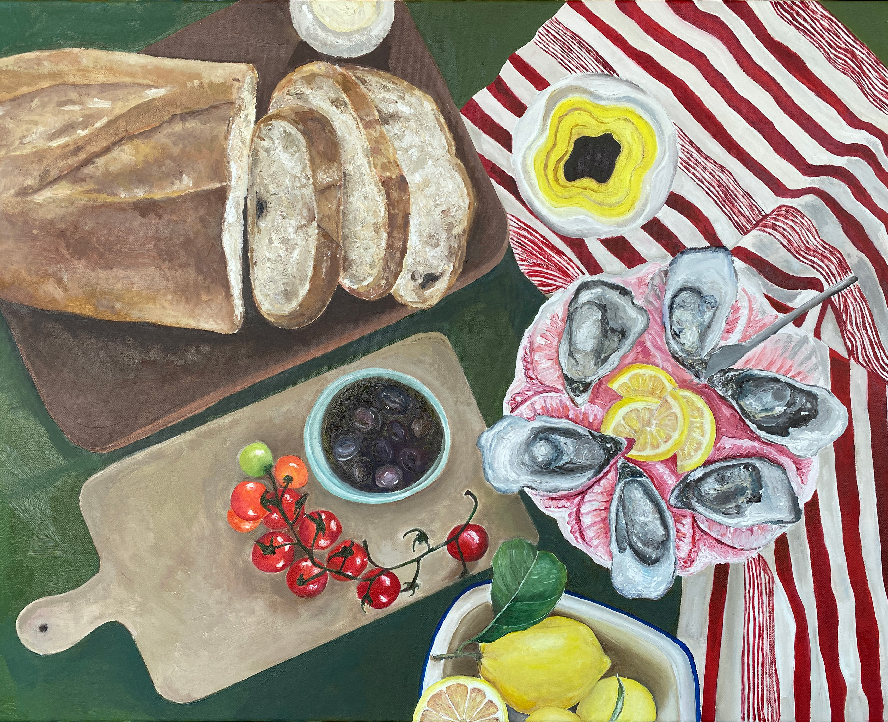
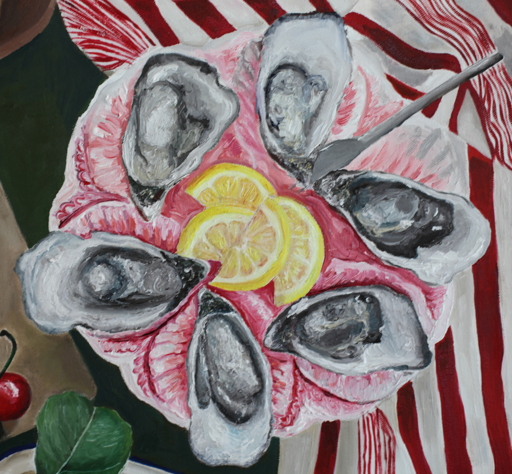
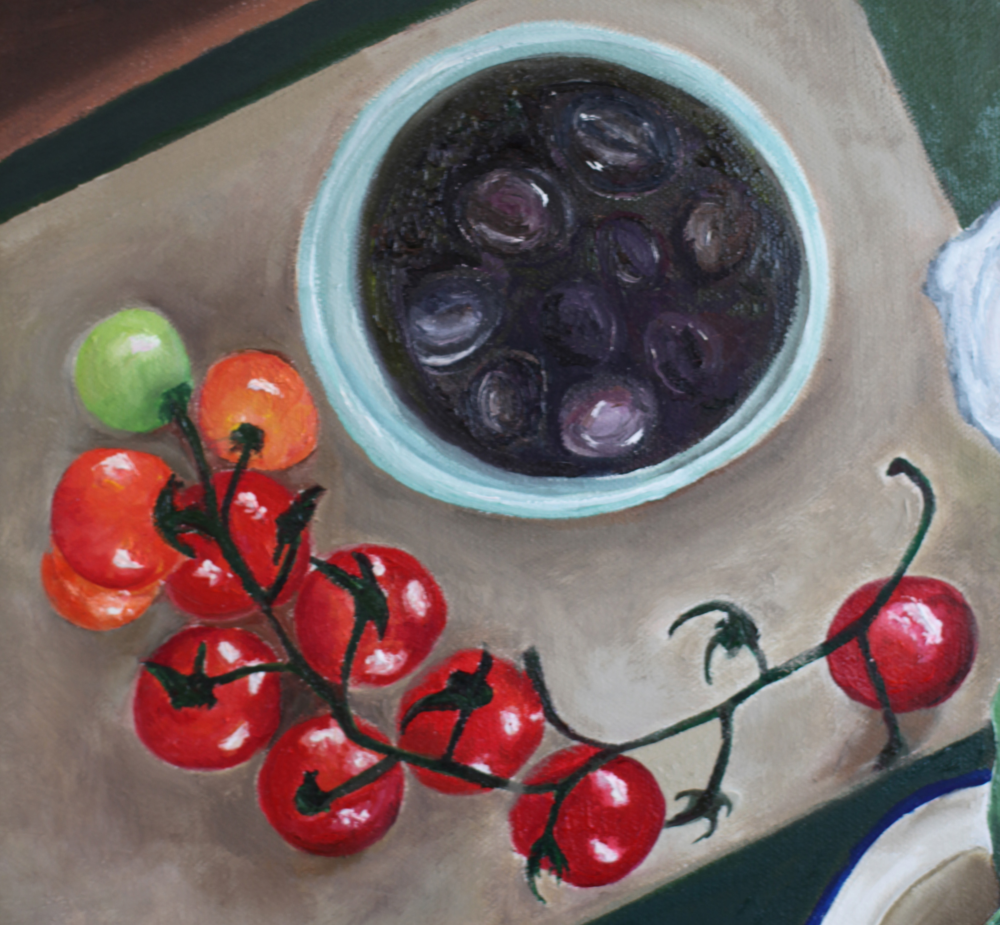
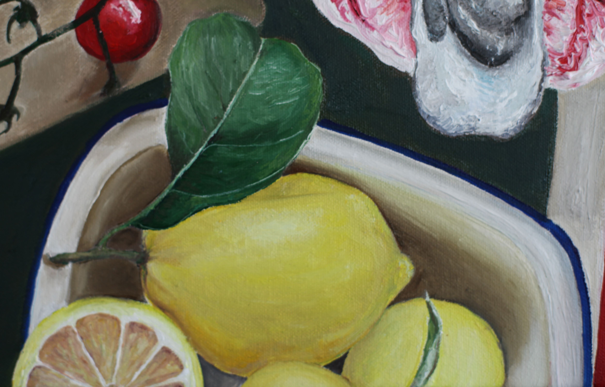
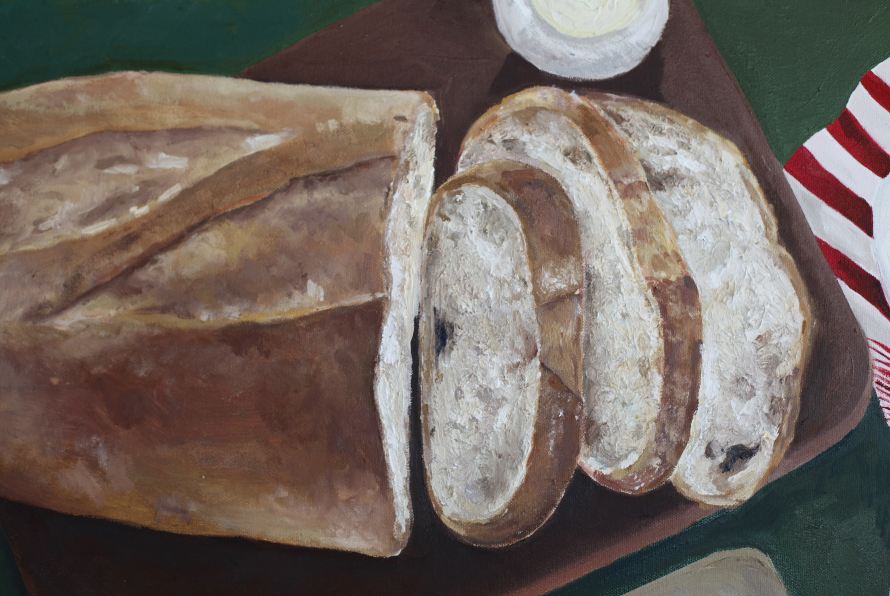
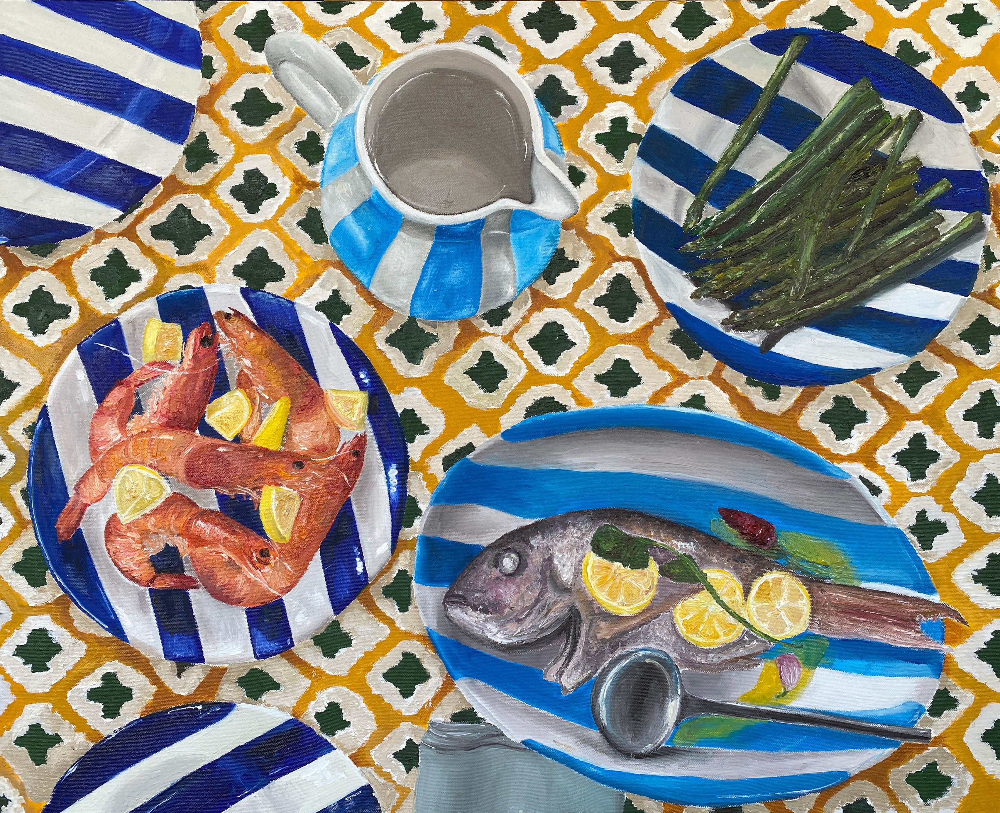
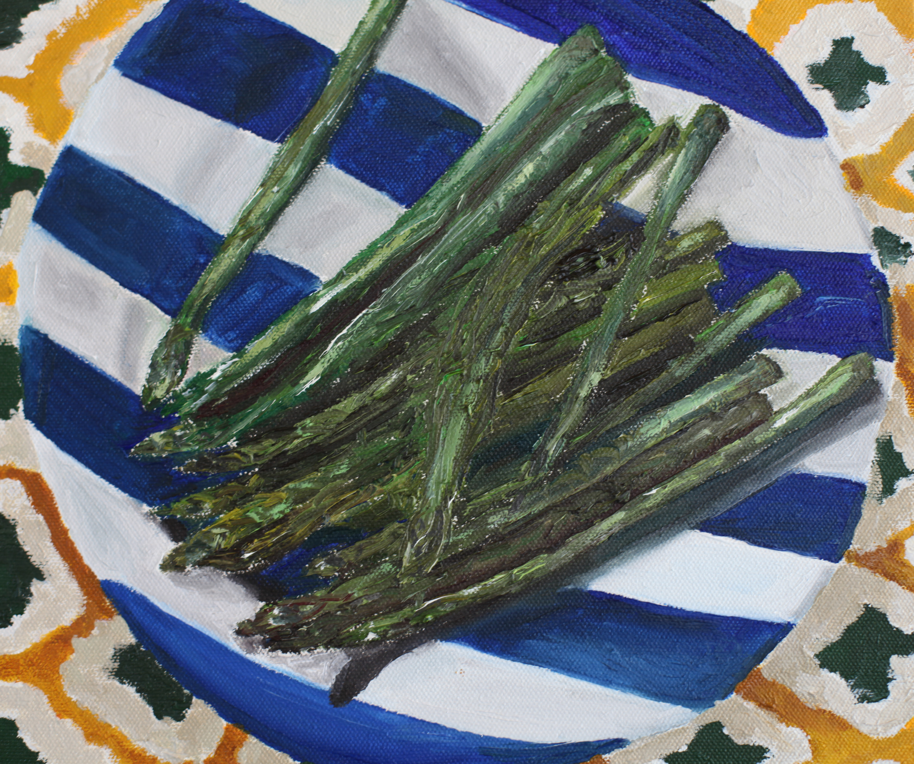
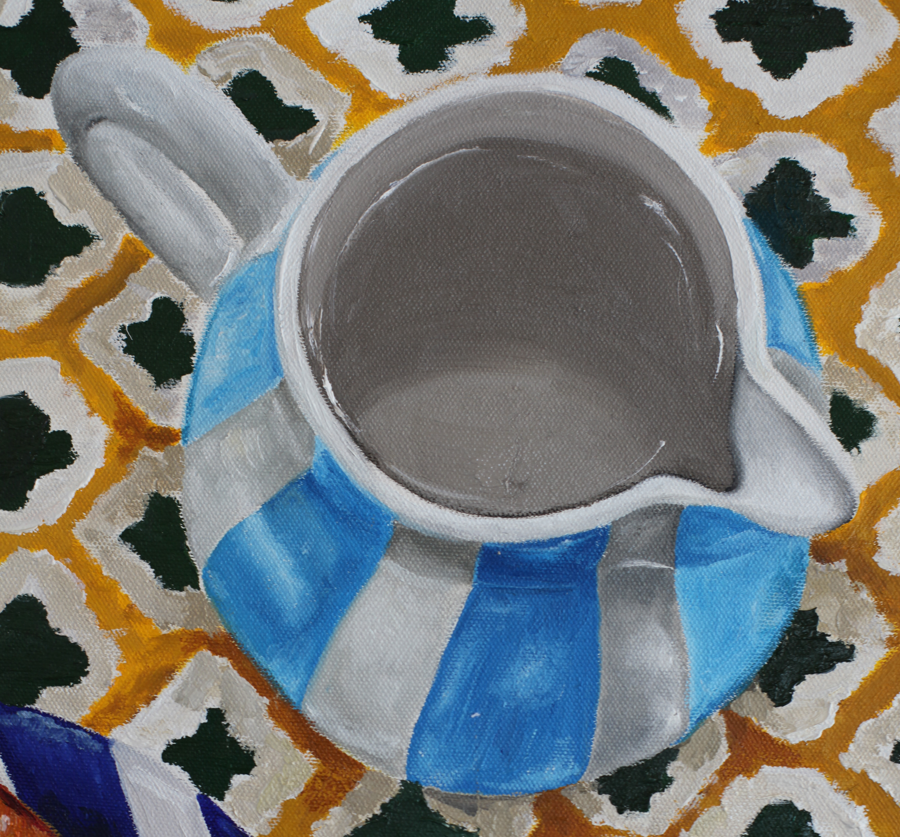
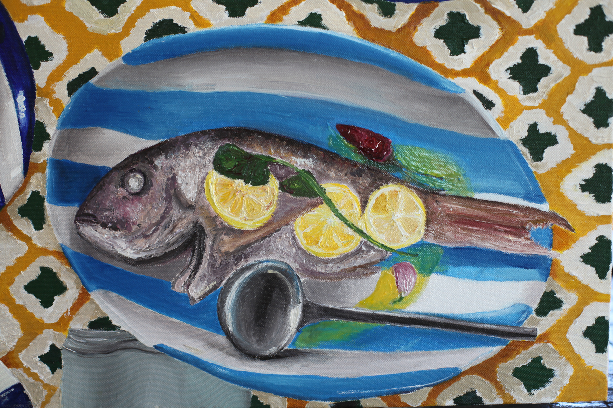
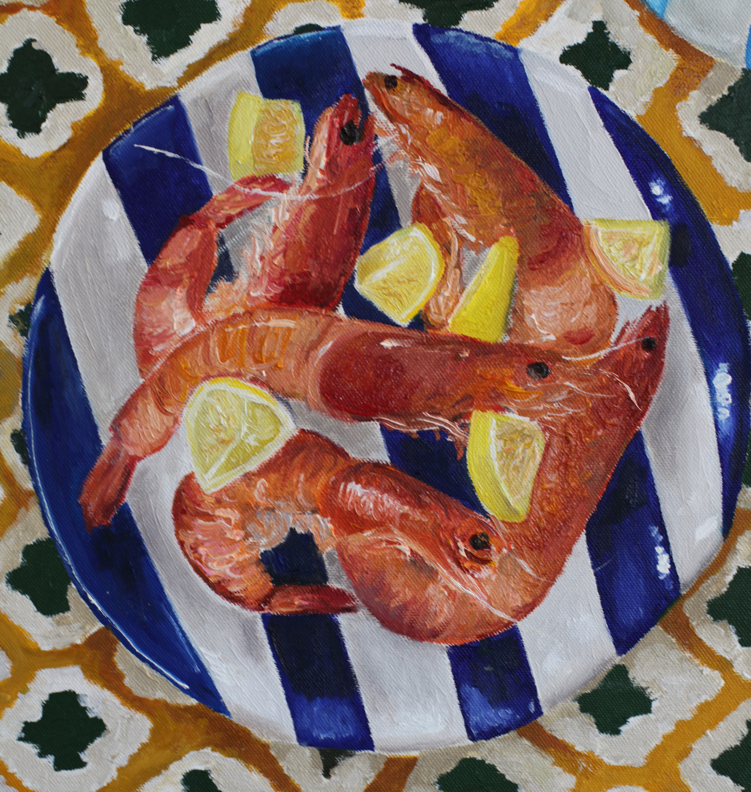
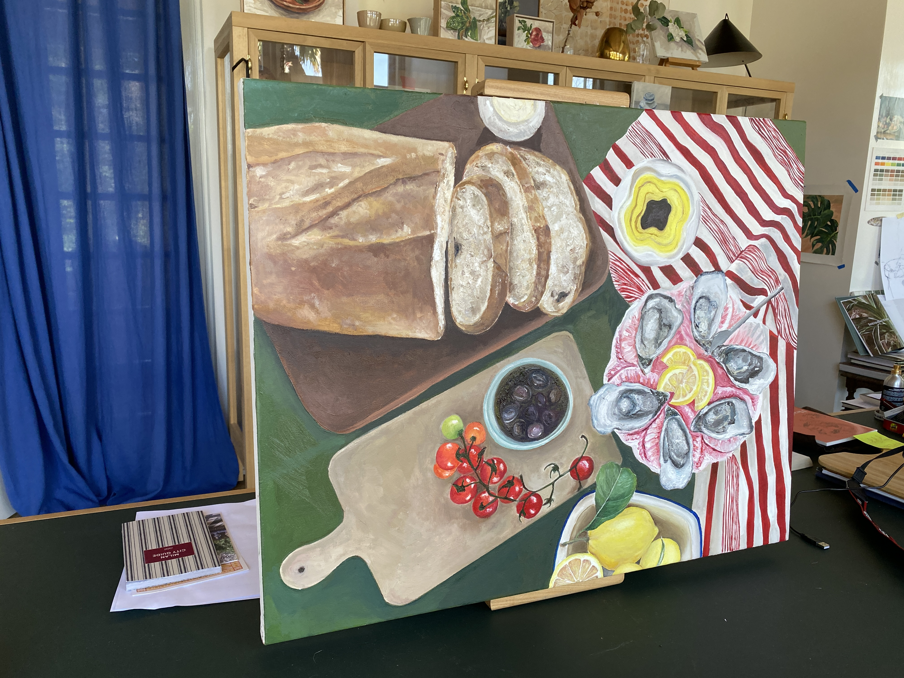
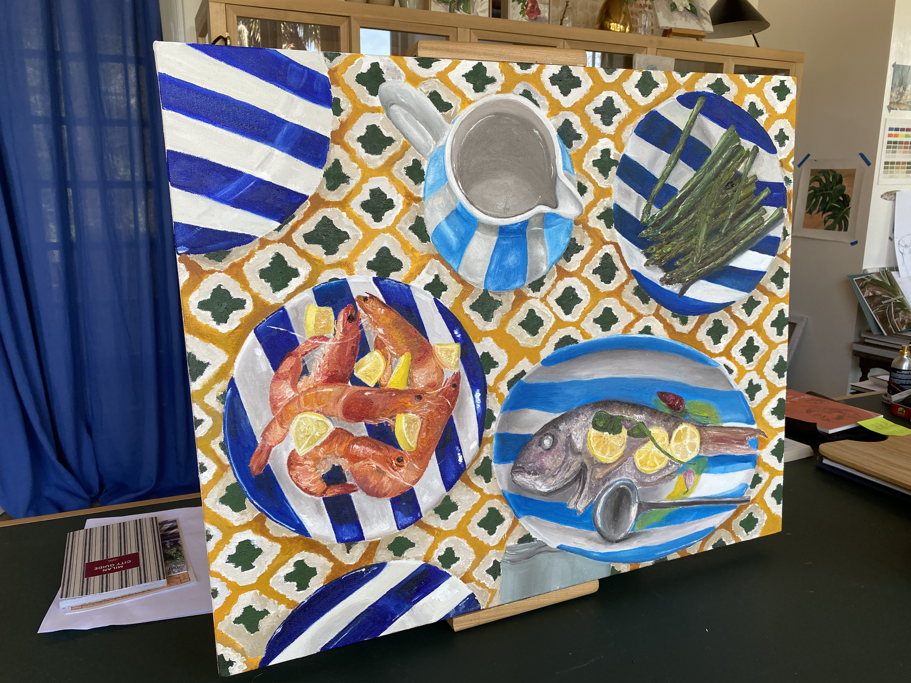
- Art Direction
- Still Life Photography
- Artwork Documentation
- Image Curation
- Full artwork imagery
- Detail photography
- Studio context images
- Curated image sequence
2022
Document physical artworks in a way that preserves the feeling of scale, texture and material detail while still reading as a polished visual series.
Warm, tactile and observational. The image sequence moves between complete compositions and close studies so viewers can understand both the artwork's overall presence and its surface details.
A cohesive documentation set that presents the artworks with a gallery-like calm while keeping the hand-made qualities visible.